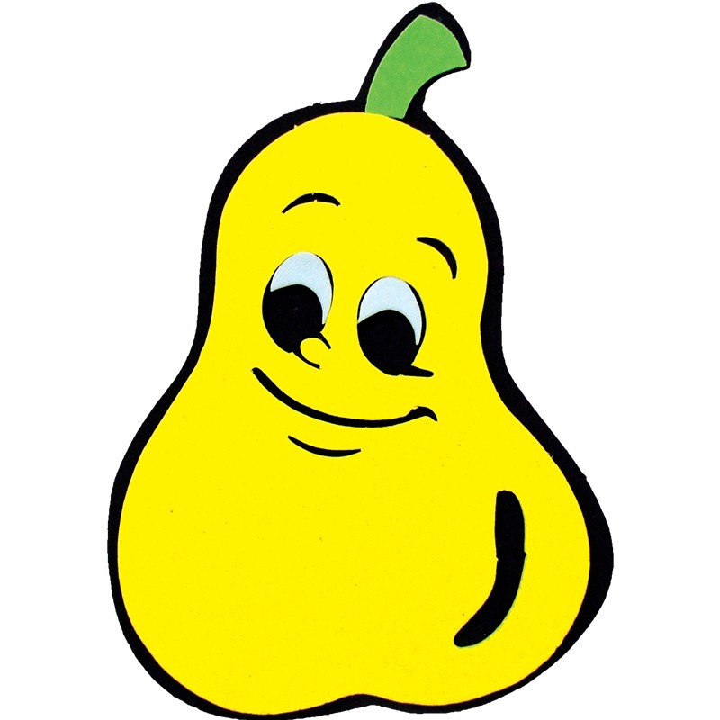
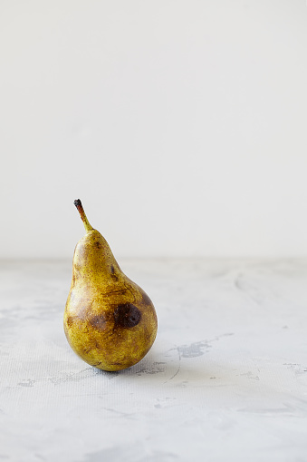

Pera

E voltamos aos fatos! o que..? não reconhece essa da foto? bom... tem um bom motivo.
Todas as fotos de peras que achei eram totalmente desgostosas. Não acredita em mim? Olhe por você mesmo.

Viu? Bom, nosso tempo aqui ja esta acabando, vamos para a proxima pagina, deixaremos os fatos pra depois!